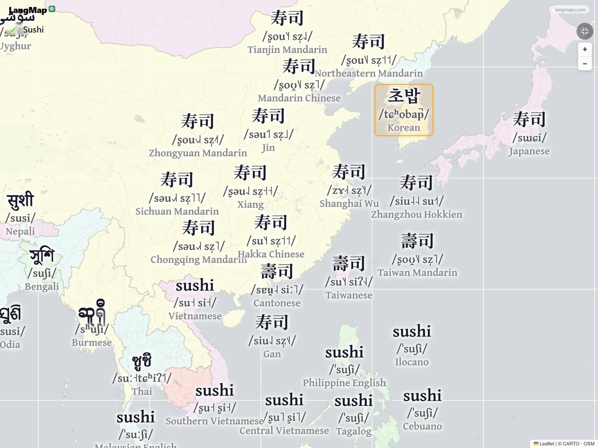

Sushi, 초밥, 寿司: Three Ways to Borrow a Word
- Much of the world simply borrowed the Japanese word sushi.
- Korean took a different route: 초밥 (chobap), literally "vinegar rice", promoted after liberation as a Korean replacement for スシ (sushi).
- Chinese borrowed the written name 寿司 / 壽司 and reads it in Chinese.

Contents
Most of the world borrowed the sound
English has sushi.
French has sushi.
Russian has суши (sushi).
Arabic has سوشي (sushi).
Most languages simply borrowed the sound of the Japanese word.
But sushi itself is much older than the familiar piece of fish on vinegared rice.
From fermented fish to Edo fast food
Its ancestors were fermented foods.
Fish was preserved with salt and rice, and fermentation produced the sourness. That tradition survives in forms such as なれずし (narezushi).
Before 寿司 became the familiar spelling, Japanese also used:
鮨
鮓
The two originally referred to somewhat different kinds of preserved fish in ancient China, but the distinction blurred, and both came to be used for sushi in Japan.
The familiar 寿司 came later as ateji (当て字), characters chosen mainly for their sound and auspicious appearance rather than their literal meaning.
Then the food itself changed.
Instead of waiting for rice to become sour through fermentation, cooks began adding vinegar directly to the rice.
This led to 早ずし (hayazushi), "quick sushi."
By the nineteenth century, Edo had developed the form now recognized around the world:
握り鮨 (nigirizushi)
It was urban fast food, commonly sold from stalls.
And 江戸前鮨 (Edomae-zushi) was not simply raw fish on rice.
Without modern refrigeration, toppings were often prepared to preserve them and improve their flavor.
コハダ (kohada) was cured in vinegar.
漬け (zuke) tuna was marinated in soy sauce.
穴子 (anago) was cooked.
That Edo food culture became the ancestor of what much of the world now calls simply "sushi."
Korea: "vinegar rice"
Now look at Korea.
Today, the standard Korean word is:
초밥 (chobap)
초 means "vinegar."
밥 means "cooked rice" or "meal."
Literally, "vinegar rice."
There is a historical reason for this name.
After liberation from Japanese rule in 1945, Korea began a major language-purification movement (국어 순화), especially aimed at replacing Japanese vocabulary that had become widespread during the colonial period.
In 1948, the Ministry of Education published 『우리말 도로찾기』, a list of Korean replacements for Japanese words.
One of its examples was:
스시 (sushi) → 초밥 (chobap)
So the spread of 초밥 was not simply a different pronunciation of sushi. It was part of a conscious effort to replace the Japanese word with a Korean one.
And "vinegar rice" happens to describe modern sushi rather well.
China: the written word comes home
Chinese took yet another route:
寿司 / 壽司
Rather than inventing a new Chinese name, Chinese adopted the Japanese written form and reads it with Chinese pronunciation.
Mandarin: shòusī
Cantonese: sau6 si1
That gives the word an unusual round trip.
Chinese characters travelled to Japan.
Japan used them to write the Japanese word sushi.
Chinese then borrowed that Japanese written word back and read the characters as Chinese.
Three routes for one word
So sushi crossed language boundaries in several different ways.
Much of the world borrowed the sound.
Korea promoted a native replacement: 초밥 (chobap), "vinegar rice."
Chinese borrowed the written form 寿司 / 壽司 and gave it Chinese pronunciation.
And behind all of those words is a food that changed dramatically over time, from fermented sushi to the 江戸前握り鮨 (Edomae nigirizushi) that eventually travelled around the world.
One word borrowed by sound, one replaced by meaning, and one carried home in its characters.